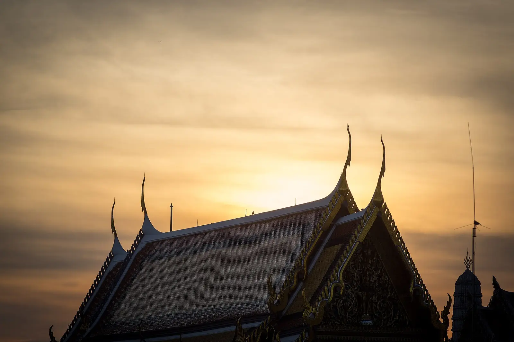
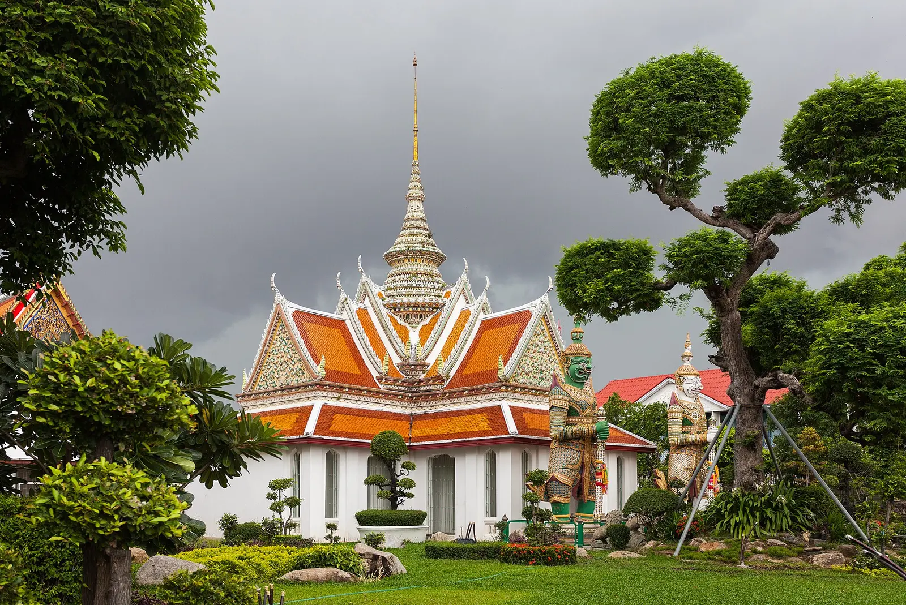
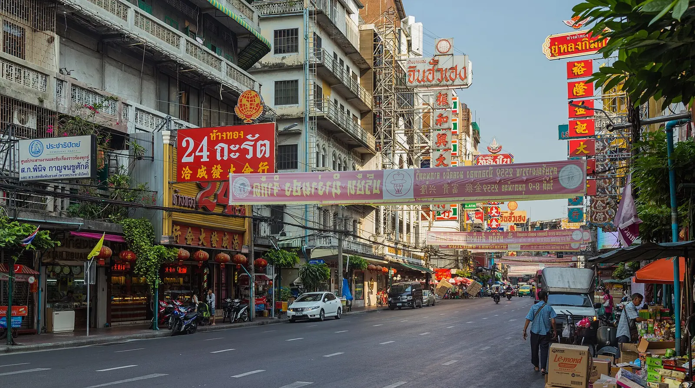

เกี่ยวกับจุดหมายนี้
กรุงเทพมหานคร เป็นจุดหมายด้านวัดและวัฒนธรรมในจังหวัดกรุงเทพมหานคร เหมาะสำหรับใช้วางแผนการเดินทางและตรวจสอบข้อมูลสถานที่จากแหล่งอ้างอิง
ข้อมูลสถานที่ที่ตรวจสอบแล้ว
- สถานที่ท่องเที่ยว
- พระบรมมหาราชวังและวัดพระศรีรัตนศาสดาราม
- เวลาเปิด–ปิด
- เปิดทุกวัน 08:30–16:30 น.; จำหน่ายบัตรถึง 15:30 น.
- ค่าเข้าชม
- คนไทยเข้าฟรีเมื่อแสดงบัตรประชาชน; ชาวต่างชาติ 500 บาท
ตรวจสอบล่าสุด: 2026-08-08
รูปภาพที่เชื่อมกับสถานที่


